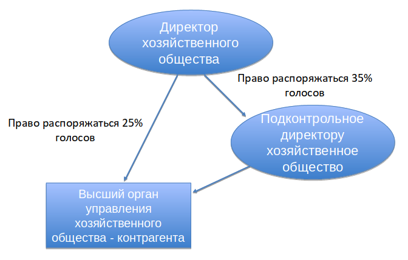

понятие и правовая природа
Выполнила:
студентка 4 курса ЧОУ ВО «Омская юридическая академия» Цыганова Анастасия Александровна
Научный руководитель:
Маланина Екатерина Николаевна, старший преподаватель кафедры гражданского права ЧОУ ВО «Омская юридическая академия»
rpts.tk
Сделка, в совершении которой имеется заинтересованность члена совета директоров (наблюдательного совета) хозяйственного общества, единоличного исполнительного органа, члена коллегиального исполнительного органа общества или лица, являющегося контролирующим лицом общества, либо лица, имеющего право давать обществу обязательные для него указания.
Лицо признается заинтересованным, если оно, его супруг (супруга), родители, дети, полнородные и неполнородные братья и сестры, усыновители и усыновленные и (или) подконтрольные им лица (организации):
Лицо, имеющее право прямо или косвенно распоряжаться более 50 процентами голосов в высшем органе управления подконтрольной организации либо право назначать (избирать) единоличный исполнительный орган и (или) более 50 процентов состава коллегиального органа управления подконтрольной организации.

| Заинтересованными лицами могут быть признаны |
|---|
| члены совета директоров (наблюдательного совета) |
| единоличный исполнительный орган |
| члены коллегиального исполнительного органа общества |
| лицо, которое осуществляет фактический контроль над обществом |
| лицо, через которое или совместно с которым осуществляется фактический контроль над обществом |
Фактический контроль осуществляется в силу прямого или косвенного преобладающего участия в его уставном капитале, на основании договора, в силу возможности давать обязательные для такого юридического лица указания, в силу возможности определять избрание (назначение) единоличного исполнительного органа (управляющей организации или управляющего) и (или) более половины состава коллегиального органа управления такого юридического лица и в иных ситуациях, в которых указанные субъекты осуществляют исполнительно-распорядительные либо управленческие функции.
Указанные лица имеют личную заинтересованность в понимании части 2 статьи 10 Федерального закона от 25.12.2008 г. №273-ФЗ «О противодействии коррупции» в отношении сделок, в которых они, а также лица, указанные в статье 2 Семейного кодекса Российской Федерации, иждивенцы перечисленных субъектов и лица, которые состоят с перечисленными субъектами в фактическом браке или иных личных доверительных отношениях:
| являются стороной, выгодоприобретателем, посредником или представителем в сделке |
| занимают должности в органах управления подобного хозяйственного общества, а также в органах управления управляющей организации такого хозяйственного общества |
| являются лицом фактически руководящим деятельностью юридического лица, являющегося стороной, выгодоприобретателем, посредником или представителем в сделке |
*Супруги, родители и дети (усыновители и усыновленные), а в случаях и в пределах, предусмотренных семейным законодательством, другие родственники и иные лица.
Возможность получения доходов
лицом, замещающим должность, замещение которой предусматривает обязанность принимать меры по предотвращению и урегулированию конфликта интересов, и (или) состоящими с ним в близком родстве или свойстве лицами, гражданами или организациями, с которыми лицо, замещающее должность, замещение которой предусматривает обязанность принимать меры по предотвращению и урегулированию конфликта интересов, и (или) лица, состоящие с ним в близком родстве или свойстве, связаны имущественными, корпоративными или иными близкими отношениями.
Ситуация, в которой сделка или отношения представляют или могут представлять конфликт между обязанностями, выполняемыми лицом, которое может быть признано заинтересованным, и его прямой или косвенной личной заинтересованностью.
пункт 1 статьи 84 Федерального закона № 208-ФЗ «Об акционерных обществах», статью 45 Федерального закона № 14-ФЗ «Об обществах с ограниченной ответственностью» абзацем следующего содержания:
| «В случае, если согласие на совершение сделки, в совершении которой имеется заинтересованность, получено с нарушением установленной процедуры, такая сделка может быть признана недействительной (пункт 2 статьи 174 Гражданского кодекса) по иску общества, члена совета директоров (наблюдательного совета) общества или акционеров [участников], владеющих в совокупности не менее, чем одним процентом голосующих акций общества [общего числа голосов участников общества], если она совершена в ущерб интересам общества и доказано, что другая сторона сделки знала или заведомо должна была знать о том, что сделка являлась для общества сделкой, в совершении которой имеется заинтересованность.» |
статью 45 Федерального закона № 14-ФЗ «Об обществах с ограниченной ответственностью» следующими положениями из Федерального закона № 208-ФЗ «Об акционерных обществах» c необходимыми исправлениями:
| «Заинтересованное лицо по иску общества или его участника несет перед обществом ответственность в размере убытков, причиненных им обществу, независимо от того, была ли признана соответствующая сделка недействительной. В случае, если ответственность несут несколько лиц, их ответственность перед обществом является солидарной.» |
| «В случае, если на дату заключения сделки, в совершении которой имеется заинтересованность, лицо, указанное в абзаце первом пункта 1 настоящей статьи, нарушило обязанность по уведомлению общества о наступлении обстоятельств, в силу которых указанное лицо может быть признано заинтересованным в соответствии с пунктом 2 настоящей статьи, вина указанного лица в причинении обществу такой сделкой убытков предполагается.» |
| о юридических лицах, в отношении которых они, их супруги, родители, дети, полнородные и неполнородные братья и сестры, усыновители и усыновленные и (или) их подконтрольные организации являются контролирующими лицами или имеют право давать обязательные указания |
| о юридических лицах, в органах управления которых они, их супруги, родители, дети, полнородные и неполнородные братья и сестры, усыновители и усыновленные и (или) их подконтрольные лица занимают должности |
| об известных им совершаемых или предполагаемых сделках, в которых они могут быть признаны заинтересованными лицами |
понятие и правовая природа
Выполнила:
студентка 4 курса ЧОУ ВО «Омская юридическая академия» Цыганова Анастасия Александровна
Научный руководитель:
Маланина Екатерина Николаевна, старший преподаватель кафедры гражданского права ЧОУ ВО «Омская юридическая академия»
rpts.tk